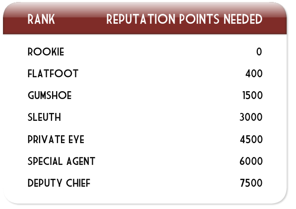

13 |
Puntos de reputación |
 |
|
Cuando resuelves un acertijo, ganas Puntos de reputación (Reputation Points). Ganas más Puntos de reputación (Reputation Points) si resuelves un acertijo sin equivocarte o sin usar ninguna pista.
A medida que aumenta tu reputación, consigues un rango mayor en la agencia de detectives ACME.

Empiezas con el rango de Novato (Rookie) y aumentas de rango a medida que consigues más Puntos de reputación (Reputation Points). Cada rango tiene subrangos marcados con estrellas.
Si eres un buen detective, puedes llegar a ser Subjefe (Deputy Chief) de ACME.
Cuando juegas la partida, los puntos se guardan. Si juegas a otro juego de la misma serie, puedes continuar aumentando tu puntuación. Solo tienes que usar el mismo personaje cuando te conectes al próximo juego al que juegues. Y los puntos de este juego se añadirán a los puntos que obtengas con el otro juego, para que puedas alcanzar el rango máximo.
|
 |
 |
 |